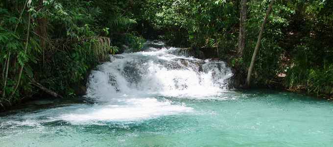

Jalapão
O parque estadual do Jalapão é uma unidade de conservação brasileira de proteção integral à natureza localizada na região leste do estado do Tocantins. O território do parque, com uma área de 158 970,95 ha, está distribuído pelos municípios de Mateiros e São Félix do Tocantins.Criado em 12 de janeiro de 2001, Jalapão é o maior parque estadual do Tocantins. A vegetação no parque é predominantemente a de cerrado ralo e a de campo limpo com veredas.
Chapada dos veadeiros

O Parque Nacional da Chapada dos Veadeiros é uma unidade de conservação brasileira de proteção integral à natureza localizada na região centro-oeste do estado de Goiás, na Chapada dos Veadeiros. Até o final de maio de 2017, o parque abrangia uma área de 65 514 ha de cerrado de altitude, dos quais aproximadamente 60 % ficam em Cavalcante e os demais 40 % em Alto Paraíso de Goiás. O parque foi criado através do Decreto Nº 49.875, emitido pelo então Presidente da República, Juscelino Kubitschek, em 11 de janeiro de 1961.
Sobre
Proporcionamos as melhores experiências turisticas.
Redes sociais